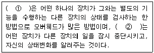
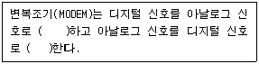

정보기기운용기능사 (2007-07-15 기출문제)
1과목: 전산 기초 이론
1. n개의 논리 변수로 이루어진 논리함수에서 n개의 변수가 서로 AND의 형태로 결합된 항을 무엇이라고 하는가?
- Sum of Product
- Product of Sum
- 최소항
- 최대항
(정답률: 58%)

2. 문자의 표현방법에 대한 설명 중 맞는 것은?
- BCD코드는 6비트로 구성되며 영문자의 대문자와 소문자 구별이 가능하다.
- EBCDIC코드는 8비트로 구성되며 데이터 통신용으로 개발되었다.
- 해밍코드는 두 개 이상의 에러를 검출하고 수정할 수 있다.
- ASCII코드는 7비트로 구성되어 128가지의 문자 표현이 가능하다.
(정답률: 65%)
3. 중앙처리장치(CPU) 구성에 대한 설명으로 적합하지 않은 것은?
- 제어 장치와 연산 장치로 구성되어 있다.
- 연산장치는 산술/논리연산을 실행하는 전자회로로 구성되어 있다.
- 연산에 사용될 데이터를 영구 저장하는 저장 레지스터(storage register)가 있다.
- 주기억장치로부터 연산할 데이터를 제공받아 연산한 결과를 다시 보관하는 누산기(accumulator)가 있다.
(정답률: 78%)
4. 프로그래밍(programming)언어에 해당되지 않는 것은?
- UNIX
- C
- JAVA
- COBOL
(정답률: 77%)
5. 다음 중 제4세대 컴퓨터의 특징이 아닌 것은?
- 마이크로컴퓨터가 실용화되어 일반 대중에 널리 보급되었다.
- 분산처리시스템(distributed processing system)이 보편화 되었다.
- 컴퓨터 네트워크(network)가 활용되었다.
- 진공관의 발열 때문에 냉각 장치가 필요하다.
(정답률: 83%)
6. 일반적인 프로그램의 작성 순서로 올바른 것은?
- 프로그램 설명문서 작성→문제 이해 분석→프로그램의 개괄 및 세부적 논리 설계→프로그램 코드 변환→프로그램 테스트 및 수정
- 문제 이해 분석→프로그램의 개괄 및 세부적 논리 설계→프로그램 테스트 및 수정→프로그램 코드 변환→프로그램 설명문서 작성
- 문제 이해 분석→프로그램의 개괄 및 세부적 논리 설계→프로그램 코드 변환→프로그램 테스트 및 수정→프로그램 설명문서 작성
- 문제 이해 분석→프로그램 설명문서 작성→프로그램의 개괄 및 세부적 논리설계→프로그램 코드 변환→프로그램 테스트 및 수정
(정답률: 57%)
7. 다음 ( )에 적합한 용어는?

- ① 폴링(polling) ② 인터럽트(interrupt)
- ① 버퍼링(buffering) ② 인터럽트(interrupt)
- ① 폴링(polling) ② 인터프리터(interpreter)
- ① 버퍼링(buffering) ② 인터프리터(interpreter)
(정답률: 71%)
8. 해상도에 대한 설명으로 옳지 않은 것은?
- 해상도를 나타내는 숫자가 클수록 화면의 선명도가 떨어진다.
- 정보를 그래픽으로 출력하는 장치에서 출력되는 정보의 정밀도를 의미한다.
- 해상도가 800×600이라는 것은 가로축 800개, 세로축 600개의 픽셀로 이루어졌다는 것을 의미한다.
- 해상도가 600DPI 이라는 것은 가로, 세로 1인치당 각각 600개의 점(dot)으로 이루어졌다는 것을 의미한다.
(정답률: 80%)
9. 다음 설명 중 옳은 것은?
- 인코더는 최대 2의 n개의 입력선과 n개의 출력선으로 구성되며 OR-Gate로 구성된다.
- 디코더는 n개의 입력선과 최대 2의 n개의 출력선으로 구성되며 OR-Gate로 구성된다.
- 멀티플렉서는 1개의 입력선으로부터 하나씩 선택하여 출력선에 내보내는 회로이다.
- 디멀티플렉서는 다수의 입력선으로 들어오는 정보 중 하나씩 선택하여 출력시키는 회로이다.
(정답률: 51%)
10. 1면에 150개의 트랙을 사용할 수 있는 양면 자기디스크에서 1트랙은 8개의 섹터로 되어 있고, 섹터 당 400Word를 기억시킬 수 있는 경우에 이 디스크의 용량은 몇 Word 인가?
- 480000
- 960000
- 1920000
- 3840000
(정답률: 60%)
2과목: 정보 기기 운용
11. 모뎀 판넬 기능에서 RS 표시등이 점등(ON) 상태이다. 이것을 가장 잘 설명하고 있는 것은?
- 상대신호가 들어옴을 표시한다.
- 선로로부터 데이터가 복조되고 있음을 나타낸다.
- DTE로부터 공급되는 상태표시며 DCE가 송신 상태임을 나타낸다.
- DTE로부터 RTS를 받아 송신 준비임을 표시한다.
(정답률: 63%)
12. 실제로 보낼 데이터가 있는 단말장치만 타임 슬롯을 할당하는 기기는?
- 주파수 분할 다중화기
- 역 다중화기
- 변복조기
- 통계적 다중화기
(정답률: 59%)
13. n개의 건전지를 직렬로 접속할 때 다음 중 옳은 것은?
- 각 건전지의 전압이 다르게 나타난다.
- 건전지에 열이 발생한다.
- 건전지의 내부저항이 감소한다.
- 건전지의 합성전압이 증가한다.
(정답률: 67%)
14. 슈퍼마켓이나 백화점 등에서 바코드 등을 이용하여 상품의 재고, 판매, 금액의 합산 등을 하는 단말기는?
- 지능형 단말기
- POS용 단말기
- 은행 단말기
- 교육용 단말기
(정답률: 89%)
15. 컴퓨터에서 가공 처리된 데이터를 마이크로필름에 축소하여 저장하는 시스템은?
- COM
- 전자파일링시스템
- 데이터베이스시스템
- CAR
(정답률: 64%)
16. 다음 ( )안에 들어갈 내용을 순서대로 나열한 것은?

- 변조, 복조
- 복조, 변조
- 변조, 변조
- 복조, 복조
(정답률: 83%)
17. 저항 값이 일정할 때 전력에 대한 설명으로 옳은 것은?
- 전압에 비례한다.
- 전압의 자승에 비례한다.
- 전압에 반비례한다.
- 전압의 자승에 반비례한다.
(정답률: 58%)
18. 데이터베이스 모델의 종류가 아닌 것은?
- 관계형 데이터베이스
- 독립형 데이터베이스
- 계층형 데이터베이스
- 네트워크형 데이터베이스
(정답률: 65%)
19. 텔레텍스트(teletext)의 기본 기능이 아닌 것은?
- 프로그램 제작기능
- 동화상 정보전송
- 프로그램 송출기능
- 신호 전송기능
(정답률: 45%)
20. 10Ω의 저항 5개를 직렬로 연결하였다. 합성저항은 얼마인가?
- 2[Ω]
- 5[Ω]
- 10[Ω]
- 50[Ω]
(정답률: 76%)
21. 자기테이프에 논리레코드 단위로 데이터를 기록시킬 때 레코드와 레코드 사이에 생기는 여백(Gap)을 무엇이라고 하는가?
- IRG
- IBG
- Track
- Sector
(정답률: 69%)
22. FDMA(frequency division multiple access) 방식의 특징이 아닌 것은?
- LSI화에 적합하여 소형화가 쉽고, 데이터 효율이 높다.
- 저속도의 비동기에 주로 사용하며, 비교적 구조가 간단하고 저렴하다.
- 인접 채널 간의 간섭을 줄이기 위한 보호 대역이 필요하므로 대역폭의 낭비가 생긴다.
- 주파수를 여러 개의 작은 대역폭으로 나누어 다수의 저속 장비를 동시에 연결하여 사용할 수 있다.
(정답률: 44%)
23. 특정한 날짜에만 발생하는 바이러스들만 모아 놓은 것은?
- 1704 바이러스, stoned 바이러스
- dark avenger 바이러스, LBC 바이러스
- 예루살렘 바이러스, 일요일 바이러스
- 브레인 바이러스, 일요일 바이러스
(정답률: 83%)
24. 어떤 도체에 t[sec] 동안에 Q[C]의 전기량이 이동했다면 전류 I[A]는?
- I = Q·t[A]
- I = Q / t[A]
- I = Q2 / t[A]
- I = Q / t2[A]
(정답률: 60%)
25. 컴퓨터바이러스로 인한 피해를 예방하는 조치로 적절하지 못한 것은?
- 감염된 파일에서 바이러스를 제거한다.
- 백신 프로그램을 수행한다.
- 램에 상주하는 바이러스 예방 프로그램을 설치한다.
- 파일을 저장할 때 암호를 설정한다.
(정답률: 66%)
26. 인터넷 상에서 시스템 보안과 관련된 기술을 의미하는 것이 아닌 것은?
- 크래킹(Cracking)
- 인증(Authentication)
- 암호화(Encryption)
- 방화벽(Firewall)
(정답률: 78%)
27. 컴퓨터가 바이러스에 감염되었을 때 나타날 수 있는 증상이 아닌 것은?
- 디스크의 사용 영역이 갑자기 줄어든다.
- CD-ROM에 수록된 자료가 갑자기 사라진다.
- 시스템이 이유 없이 느려지거나 메모리 크기가 줄어든다.
- 컴퓨터를 사용할 때 이상한 음악이나 오류 메시지가 나타난다.
(정답률: 68%)
28. 다기능 전화기에서 통화중에 사용자의 편리를 위하여 갖추어지는 기능은?
- 자동다이얼
- 비응답
- 부재전송
- 핸드 프리
(정답률: 63%)
29. 광학적인 방법으로 문자나 그림을 읽어 들여 전기적인 신호로 바꾸어 통신망을 이용해 원거리에서 이를 받아 복사해내는 사무기기를 나타낸 것은?
- 복사기
- 팩시밀리
- 전자우편
- 전자회의
(정답률: 77%)
30. 200Ω의 저항 4개를 접속하여 얻을 수 있는 합성저항 중 가장 작은 값은 몇 Ω인가?
- 300
- 200
- 50
- 25
(정답률: 76%)
3과목: 정보 통신 일반
31. 4위상 변조를 하여 데이터를 전송하는데 신호변조 속도가 60[baud]라 할 때 이는 몇 [bps]에 해당 하는가?
- 60
- 120
- 200
- 240
(정답률: 69%)
32. 다음 중 통신신호 세기의 레벨을 나타내는 단위로 적합한 것은?
- 헤르츠[Hz]
- 데시벨[dB]
- 비피에스[bps]
- 보오[Baud]
(정답률: 64%)
33. 다음 중 저속도에서 주로 사용되는 변복조기는?
- 비동기식 변복조기
- 동기식 변복조기
- 광대역 변복조기
- 멀티포트 변복조기
(정답률: 74%)
34. 데이터를 전송할 때 캐릭터마다 전송의 정확을 기하기 위한 에러 검출을 위하여 덧붙여 보내는 비트는?
- 패리티 비트
- 스타트 비트
- 스톱 비트
- 데이터 비트
(정답률: 80%)
35. 다음 전송매체 중 CATV 방송시스템에서 가입자 댁내인입 전송선로에 가장 적합한 것은?
- 동축케이블
- 쌍연케이블
- 나선케이블
- 폼스킨케이블
(정답률: 87%)
36. 다음 중 정보의 개념으로 가장 적합하지 않은 것은?
- 아직 평가가 내려지지 않은 기호 또는 문자
- 데이터를 처리 가공한 결과물
- 데이터에 의미를 부여한 것
- 이용이 가능한 상태의 것
(정답률: 77%)
37. 이더넷(Ethernet)에 관한 설명으로 틀린 것은?
- DIX 규격을 사용한다.
- 10[Mbps]의 데이터 전송속도가 있다.
- 10 BASE 2는 HUB 또는 멀티포트 트랜시버 기기가 필요하다.
- 10 BASE T도 이에 속한다.
(정답률: 52%)
38. 다음 정보통신 관련 용어의 해석이 틀린 것은?
- MODEM - 변복조기
- LAN - 근거리통신망
- PCS - 중앙처리장치
- ISDN - 종합정보통신망
(정답률: 77%)
39. 하나의 컴퓨터를 여러 사용자가 동시에 공동 이용하고 있어도 각 사용자가 마치 자기가 혼자서 컴퓨터를 독점하고 있는 것처럼 사용할 수 있는 기능은?
- 메시지 교환(Message switching)
- 타임 쉐어링(Time sharing)
- 컴퓨터 네트워크(Computer network)
- 혼합 컴퓨터(Hybrid computer)
(정답률: 61%)
40. 다음 중 광통신시스템의 가장 적합한 구성은?
- 송신부 - 전광변환 - 광섬유 - 광전변환 - 수신부
- 발광부 - 음성변환 - 중계부 - 음성변환 - 수광부
- 부호부 - 표본화 - 전송부 - 양자화 - 복호부
- 음성 - 전기신호 - 전광변환 - 광신호 - 음성
(정답률: 77%)
41. 정보통신 관련 표준안을 제안하는 기구가 아닌 것은?
- ISO
- ITU-T
- ISDN
- ANSI
(정답률: 56%)
42. 동기식 전송방식에 사용되는 SDLC, HDLC에서 주로 데이터 전송시 쓰이는 에러검출방식은?
- 패리티방식
- ARQ방식
- 정마크부호방식
- CRC방식
(정답률: 42%)
43. 다음 중 기본적으로 축적 후 전달(store and forward)에 의한 교환방식은?
- 메시지 교환방식
- 회선 교환방식
- 패킷 교환방식
- 데이터그램 교환방식
(정답률: 45%)
44. 다음 중 광섬유케이블의 일반적인 특성이 아닌 것은?
- 전자기적 잡음의 영향이 없다.
- 동선케이블에 비해서 대역폭이 넓다.
- 무유도성이다.
- 신호 감쇠율이 높다.
(정답률: 64%)
45. 어떤 전송채널이 단위시간당 전송할 수 있는 비트 수는 샤논(Shannon)에 의하여 정립되었는데 이는 다음 중 어느 것과 관련되는가?
- 전송로의 임피던스
- 통신회선의 정전용량
- 신호대잡음비
- 통신신호의 위상
(정답률: 47%)
46. 아날로그 지상파 컬러 TV의 NTSC방식에서 주사선수는?
- 1025
- 850
- 725
- 525
(정답률: 49%)
47. 송신측에서 PCM신호를 만드는 과정이 아닌 것은?
- 표본화
- 부호화
- 양자화
- 복호화
(정답률: 72%)
48. OSI 7 계층 모델에서 하위계층에 해당되는 것은?
- 물리계층, 네트워크계층, 세션계층
- 표현계층, 응용계층, 데이터링크계층
- 물리계층, 데이터링크계층, 네트워크계층
- 응용계층, 세션계층, 트랜스포트계층
(정답률: 82%)
49. 다음 중 성형(star) 통신망의 설명으로 가장 거리가 먼 것은?
- 중앙집중식이다.
- 통신망의 기본적인 형태이다.
- 통신회선이 비교적 많이 필요하다.
- 중앙시스템이 고장이 나도 전체시스템의 영향은 없다.
(정답률: 77%)
50. 회선의 종단을 위해 이용자 구내에 설치하는 MODEM 이나 DSU를 무엇이라고 하는가?
- 데이터다중화장치
- 정보처리장치
- 데이터회선종단장치
- 단말장치
(정답률: 51%)
4과목: 정보 통신 업무 규정
51. 교환설비, 단말장치 등으로부터 수신된 전기통신부호, 문헌, 음향 또는 영상을 변환 , 재생 또는 증폭하여 유선 또는 무선으로 송신하거나 수신하는 설비로서 전송단국장치, 중계장치, 다중화장치, 분배장치 등과 그 부대설비를 말하는 것은?
- 교환설비
- 선로설비
- 전송설비
- 전원설비
(정답률: 56%)
52. 다음 중 정보화추진위원회의 위원장은?
- 과학기술부장관
- 정보통신부장관
- 국무총리
- 산업자원부장관
(정답률: 42%)
53. 부가통신사업에 관한 설명 중 적합하지 않은 것은?
- 부가통신사업을 경영하고자 하는 자는 정보통신부장관에게 신고하여야 한다.
- 부가통신사업자가 그 사업의 일부를 폐지하고자 할 경우에는 그 폐지예정일 30일 전까지 그 내용을 당해 역무의 이용자에게 통보하고 정보통신부장관에게 신고하여야 한다.
- 사위 기타 부정한 방법으로 신고한 경우 정보통신부장관은 사업의 폐지를 명하여야 한다.
- 부가통신사업자가 사업정지처분을 위반한 경우 3천만원 이하의 과태료에 처한다.
(정답률: 45%)
54. 다음 중 정보통신서비스제공자의 책무가 아닌 것은?
- 이용자의 개인정보 보호
- 이용자의 권익보호
- 정보이용능력의 향상
- 정보통신망에서의 청소년보호 등을 위한 활동 지원
(정답률: 70%)
55. 정보통신부장관이 중요한 통신을 확보하기 위하여 전기통신사업자에게 전기통신업무의 일부를 제한하거나 정지할 것을 명할 수 있는 경우는?
- 통화폭주가 발생한 경우
- 국가비상사태가 발생한 경우
- 재해구호의 경우
- 통신설비장해가 발생한 경우
(정답률: 75%)
56. 전기통신설비를 이용하거나 전기통신설비와 컴퓨터 및 컴퓨터의 이용 기술을 활용하여 정보를 수집, 가공, 저장, 검색, 송신 또는 수신하는 정보통신체제를 무엇이라고 하는가?
- 초고속통신망
- 정보처리망
- 정보통신망
- 정보전송망
(정답률: 74%)
57. 전기통신사업의 분류로 옳은 것은?
- 기간통신사업, 부가통신사업, 일반통신사업
- 기간통신사업, 부가통신사업, 특정통신사업
- 기간통신사업, 부가통신사업, 별정통신사업
- 기간통신사업, 별정통신사업, 일반통신사업
(정답률: 76%)
58. 기간통신사업자간 전기통신설비의 공동사용과 상호접속을 하기 위해서 필요한 사전 조치로 가장 적합한 것은?
- 정보통신부장관의 승인을 받아야 한다.
- 사업자간 임의로 협의하여 사용한다.
- 사업자간 협정을 체결하여야 한다.
- 경쟁의 촉진을 위하여 어떠한 조치도 없다.
(정답률: 49%)
59. 전기통신을 하기 위한 기계, 기구, 선로 기타 전기통신에 필요한 설비를 무엇이라고 하는가?
- 정보통신설비
- 전기통신설비
- 전기통신자재
- 전기통신망
(정답률: 64%)
60. 다음 중 기간통신사업의 허가를 받을 수 있는 자는?
- 외국정부
- 외국법인
- 국내 대기업 법인
- 지방자치단체
(정답률: 71%)